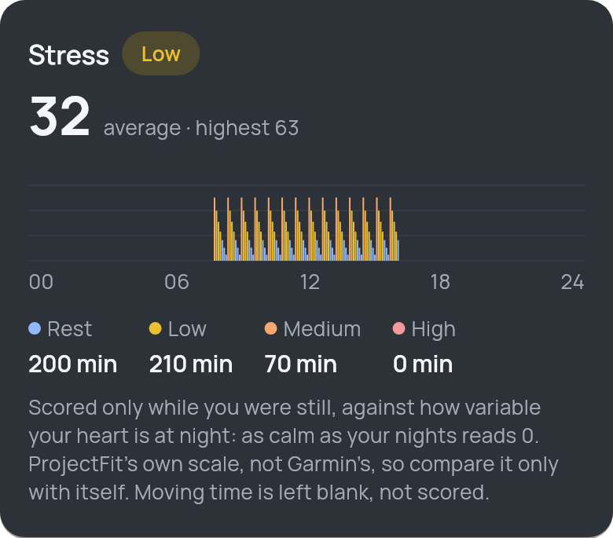
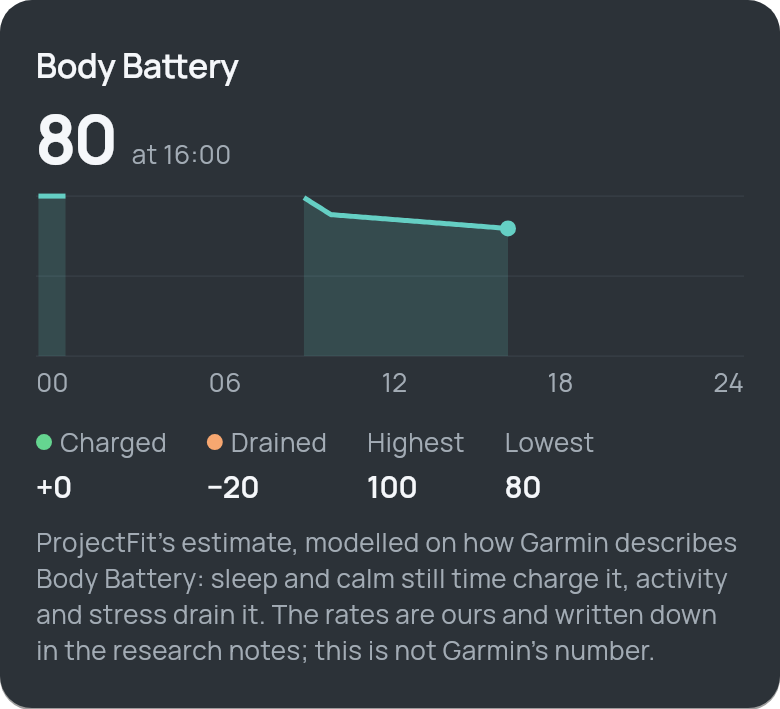
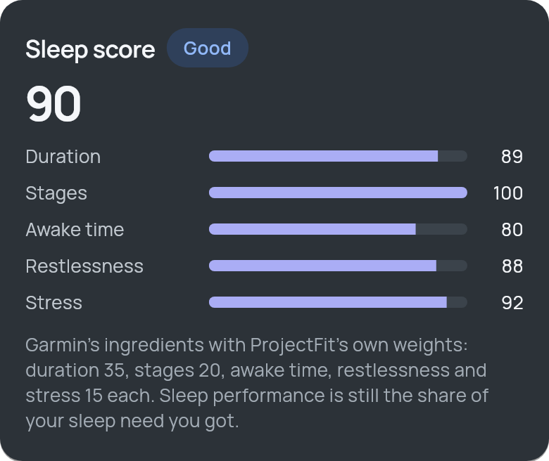
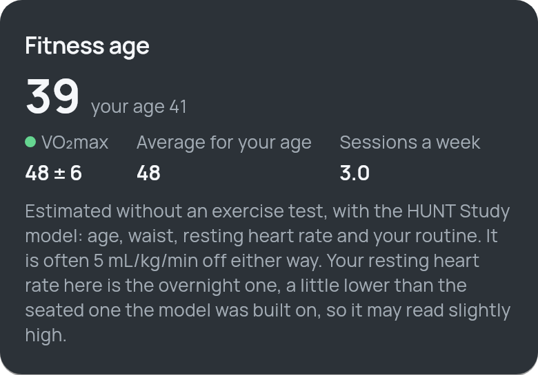
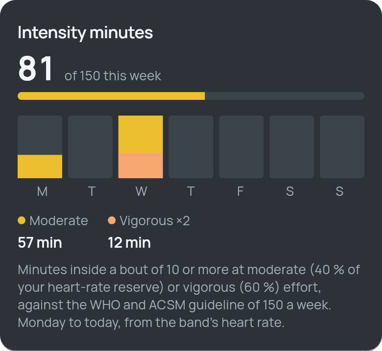
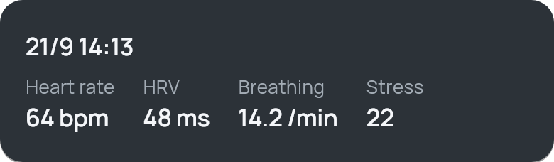

只在静止时计算的压力
根据五分钟的静止区间得出 0–100 的压力值，并与你夜间的心率变异性比较。活动时间留空，不计分。

功能
每个数值都基于已发表的方法，常数全部公开。数据还不够时，ProjectFit 会直接告诉你，而不是去猜。
根据五分钟的静止区间得出 0–100 的压力值，并与你夜间的心率变异性比较。活动时间留空，不计分。

睡眠和平静休息时充电，活动和压力时消耗。每个速率都公开写明，你能看到它为什么变化。

相对个人睡眠需求的时长、睡眠阶段、清醒时间、躁动程度和夜间压力，每项都标出权重。

用 HUNT 研究模型（年龄、腰围、静息心率、运动习惯）从日常习惯估算 VO₂max，并给出平均水平与之相当的年龄。

每周中等与高强度分钟数对照世卫组织 150 分钟目标，以及四周训练在低强度有氧、高强度有氧和无氧之间的分布。

静坐两分钟：心率、HRV、呼吸频率和压力保存为一条记录。

隐私
没有 ProjectFit 账号，也没有 ProjectFit 服务器。手环通过蓝牙直接连接应用。
所有指标都在手机上由手环的原始数据计算，离线也能使用。
无需注册。备份经过加密，保存在你选择的位置。
全部代码以 AGPL-3.0 许可证发布在 GitHub 上，任何人都可以检查。
安装
ProjectFit 尚未上架 App Store 或 Play Store，请从 GitHub 发布页安装（安装指南为英文或印尼文）。
iOS 15 或更高 · 免费 Apple ID